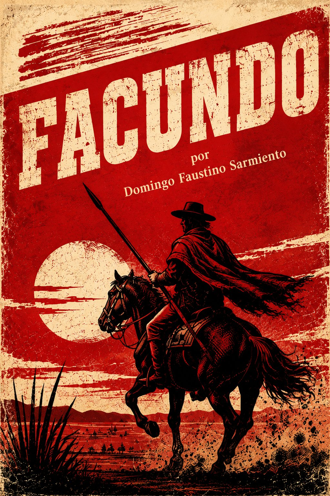
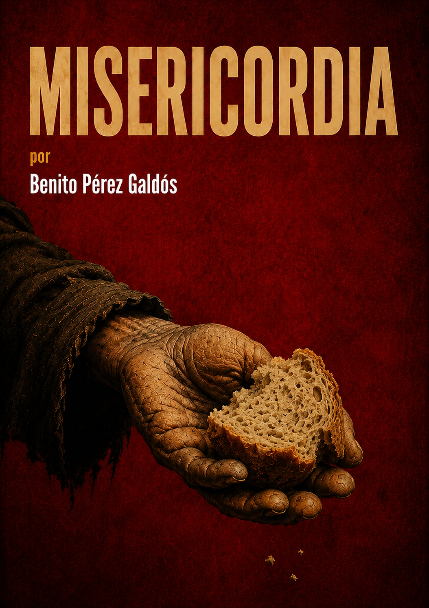

Cartas de Jamaica
3.7/5
Resumen
Escrita por Simón Bolívar durante su exilio en Kingston, esta carta de 1815 responde a un caballero inglés que le pregunta por el porvenir de la América antes española, justo tras el colapso de la Segunda República de Venezuela. Bolívar traza un diagnóstico severo de tres siglos de dominio colonial y esboza, con notable clarividencia, el mapa de las futuras naciones americanas y los obstáculos —raciales, geográficos, políticos— que enfrentarían en su camino hacia la independencia.

Facundo o Civilización y Barbarie
4.6/5
Resumen
Domingo Faustino Sarmiento escribió este ensayo de 1845 durante su propio exilio en Chile, usando la biografía del caudillo riojano Juan Facundo Quiroga como pretexto para diagnosticar los males de la Argentina bajo la dictadura de Juan Manuel de Rosas. Contrapone la barbarie rural del gaucho y el caudillismo con la civilización europeizante de las ciudades, en un texto fundacional del pensamiento latinoamericano cuya dicotomía se sigue debatiendo casi dos siglos después.
La Fontana de Oro
4.7/5
Resumen
Primera novela de Benito Pérez Galdós, ambientada en el Madrid turbulento del Trienio Liberal (1820–1823), donde un joven recién llegado a la capital se ve arrastrado a las intrigas políticas y románticas que giran en torno al café homónimo, foco de agitación liberal contra el absolutismo fernandino. Entre conspiraciones, delaciones y un amor imposible, Galdós inaugura aquí el pulso histórico-social que definiría toda su obra posterior.
Martín Fierro
5.0/5
Resumen
Poema gauchesco de José Hernández que sigue a Martín Fierro, un gaucho reclutado por la fuerza para defender la frontera, quien deserta tras sufrir los abusos del ejército y termina convertido en forajido perseguido por la justicia. Escrito como denuncia de las políticas de Sarmiento y sus sucesores hacia el hombre de campo, se convirtió —pese a su origen popular y su lenguaje oral— en el poema nacional de la Argentina y en la piedra fundacional de la literatura gauchesca.

Misericordia
5.0/5
Resumen
Benito Pérez Galdós narra la historia de Benina, una anciana criada que mendiga en secreto por las calles de Madrid para sostener económicamente a su señora, Doña Paca, una viuda venida a menos que finge conservar su antiguo estatus. A través de la amistad de Benina con Almudena, un mendigo ciego marroquí, la novela contrasta la caridad genuina de los márgenes de la sociedad con la hipocresía de una clase media que confunde las apariencias de la respetabilidad con la virtud.
Mariana Pineda
4.4/5
Resumen
Federico García Lorca lleva a escena en 1927 la historia real de Mariana Pineda, ejecutada en Granada en 1831 por orden del rey absolutista Fernando VII tras encontrarse en su poder una bandera liberal bordada por ella misma. Convertida por Lorca en un romance trágico entre el amor y la libertad, Mariana debe decidir si delata a los conspiradores que ama para salvar su vida o guarda silencio y se convierte en mártir. Un drama en verso que hermana el costumbrismo andaluz de Lorca con la memoria histórica del liberalismo español del siglo XIX.
Doña Perfecta
4.6/5
Resumen
Benito Pérez Galdós enfrenta a Pepe Rey, un joven ingeniero de ideas liberales, con su tía Doña Perfecta, matriarca de la ficticia y ferozmente tradicionalista Orbajosa, en la España de la Restauración de la década de 1870. Lo que empieza como un acuerdo matrimonial entre primos se convierte en una guerra silenciosa entre el progreso científico y el poder clerical y caciquil de la provincia. Una de las primeras y más feroces "novelas de tesis" de Galdós sobre el choque entre la España que quería modernizarse y la que se resistía a hacerlo.
Lucía Jerez
3.8/5
Resumen
Publicada por entregas en 1885 bajo el seudónimo de Adelaida Ral, esta es la única novela de José Martí, ambientada en los círculos de la alta sociedad hispanoamericana de su época. Lucía, una joven de temperamento apasionado y posesivo, ve amenazado su compromiso con Juan Jerez cuando este se involucra con la humilde y enferma Ana. Bajo la superficie de novela de costumbres y salón, Martí tiende un examen agudo de los celos, el materialismo y la hipocresía de una burguesía americana que imitaba los modales europeos.